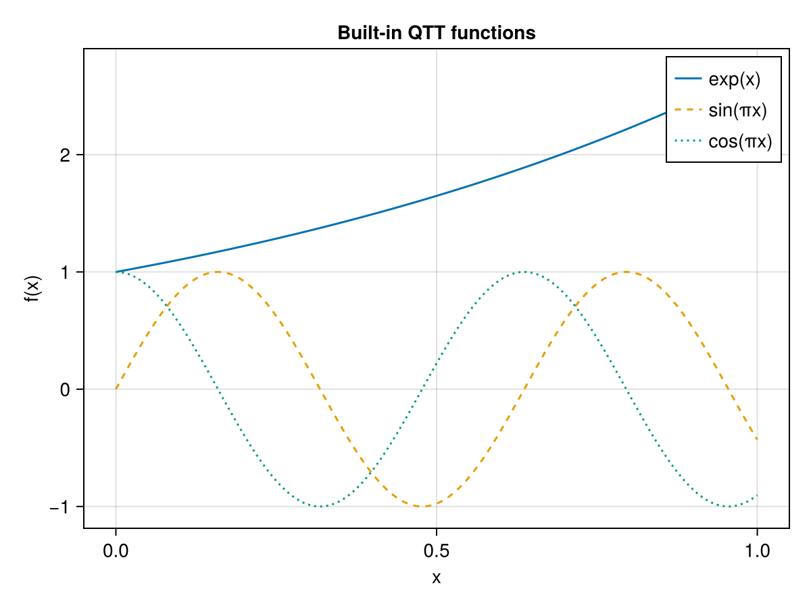

Quantics Tensor Trains
A quantics tensor train (QTT) represents a function on a uniform grid of $2^L$ points as a TT with $L$ sites, each of physical dimension 2. The idea is to interpret the grid index in binary:
\[j = j_1 \cdot 2^{L-1} + j_2 \cdot 2^{L-2} + \cdots + j_L \cdot 2^0, \qquad j_k \in \{0,1\}.\]
Site $k$ carries the $k$-th most-significant bit. Smooth or oscillatory functions — exponentials, sines, polynomials — compress to very low TT-rank in this encoding [5].
1D QTT
The simplest use case represents $f:[0,1]\to\mathbb{R}$ sampled at $x_j = j/(2^L-1)$, $j = 0,\ldots,2^L-1$.
using TensorTrainNumerics
using CairoMakie
L = 8 # 2^8 = 256 grid points
v_exp = qtt_exp(L)
v_sin = qtt_sin(L, λ = π)
v_cos = qtt_cos(L, λ = π)
x = LinRange(0, 1, 2^L)
fig = Figure()
ax = Axis(fig[1, 1], xlabel = "x", ylabel = "f(x)", title = "Built-in QTT functions")
lines!(ax, x, qtt_to_function(v_exp), label = "exp(x)")
lines!(ax, x, qtt_to_function(v_sin), label = "sin(πx)", linestyle = :dash)
lines!(ax, x, qtt_to_function(v_cos), label = "cos(πx)", linestyle = :dot)
axislegend(ax)
fig
Built-in mathematical functions
The following functions provide exact or near-exact QTT representations [5]:
| Function | Description |
|---|---|
qtt_exp(L) | $e^x$ on $[0,1]$ |
qtt_sin(L; λ) | $\sin(\lambda x)$ |
qtt_cos(L; λ) | $\cos(\lambda x)$ |
qtt_polynom(coeffs, L; a, b) | Polynomial with given coefficients on $[a,b]$ |
qtt_chebyshev(n, L) | Chebyshev polynomial $T_n$ |
Constructing a QTT from an arbitrary function
function_to_qtt builds a QTT from a black-box function via TT-cross:
g = function_to_qtt(x -> cos(10π * x) * exp(-x), L)
vals = qtt_to_function(g) # returns a length-2^L vector256-element Vector{Float64}:
0.9999999999999997
0.9885362856393798
0.9622204361593888
0.9215662465120873
0.8673002212085629
0.8003489314411053
0.7218234469757494
0.6330011009798905
0.5353048842453553
0.43028079878286946
⋮
0.20967979046602161
0.24601047645271182
0.2783388897743206
0.30620765507371284
0.32923037766036756
0.3470969293203706
0.35957754006582804
0.36652564330558685
0.36787944117144233Interpolation via InterpolativeQTT.jl
For high-accuracy function approximation — including multidimensional and singular functions — TensorTrainNumerics integrates with InterpolativeQTT.jl via a package extension that activates when both InterpolativeQTT and TensorCrossInterpolation are loaded.
The bridge function to_ttvector converts a TCI.TensorTrain into a TTvector. For multidimensional functions the TCI result has fused physical indices (one site per bit level, encoding all spatial dimensions simultaneously); to_qtt then splits each fused core into single-bit sites and QTTvector attaches the ordering metadata.
Single-scale 3D interpolation:
using TensorTrainNumerics
using InterpolativeQTT
import TensorCrossInterpolation as TCI
f(x, y, z) = 1 / sqrt((x - 0.5)^2 + (y - 0.5)^2 + (z - 0.5)^2 + 0.01)
f(c::AbstractVector) = f(c...) # vector form required by function_to_qttv
numbits = 6 # 2^6 = 64 grid points per dimension
degree = 4 # local Chebyshev degree
tt_tci = interpolatesinglescale(f, (0.0, 0.0, 0.0), (1.0, 1.0, 1.0), numbits, degree)
tt_fused = to_ttvector(tt_tci) # TTvector, phys_dim = 2³ per site
# Split each fused core into three single-bit cores, then attach QTT metadata
ttv_split = to_qtt(tt_fused, [[2, 2, 2] for _ in 1:numbits])
q_interleaved = QTTvector(ttv_split, 3, numbits, :interleaved)
q_serial = reorder(q_interleaved, :serial)Multi-scale 1D interpolation for singular functions:
inv_x(x) = x == 0.0 ? 0.0 : 1 / x
tt_tci_ms = interpolatemultiscale(inv_x, 0.0, 1.0, 10, 8, [0.0])
tt_ms = to_ttvector(tt_tci_ms) # TTvector, binary phys_dim per levelThe multiscale representation places one binary physical site per refinement level; its rank is controlled by the local polynomial degree rather than the function's global smoothness, making it efficient for functions with isolated singularities.
Serial and interleaved orderings
For a $d$-dimensional function on $\{0,\ldots,2^L-1\}^d$ there are $d \cdot L$ bits in total, and two natural ways to sequence them into a TT:
Serial ordering — all $L$ bits of dimension 1, then all $L$ bits of dimension 2, etc.:
\[[\underbrace{b_1^{(1)},\ldots,b_L^{(1)}}_{L \text{ sites}},\; \underbrace{b_1^{(2)},\ldots,b_L^{(2)}}_{L \text{ sites}},\; \ldots]\]
Interleaved ordering — the most-significant bit of every dimension, then the next, etc.:
\[[\underbrace{b_1^{(1)},b_1^{(2)},\ldots,b_1^{(d)}}_{d \text{ sites}},\; \underbrace{b_2^{(1)},b_2^{(2)},\ldots,b_2^{(d)}}_{d \text{ sites}},\;\ldots]\]
Interleaved ordering often yields lower ranks for isotropic functions because it groups multi-scale information across all dimensions at each resolution level.
QTTvector and QTToperator
Plain TTvector/TToperator objects carry no information about the QTT structure. The QTTvector and QTToperator wrappers attach the metadata needed to track consistency across operations:
QTTvector{T, N} <: AbstractTTvector{T}
QTToperator{T, N} <: AbstractTToperator{T}Both carry three extra fields on top of the standard TT data:
| Field | Type | Meaning |
|---|---|---|
n_dims | Int | Number of physical dimensions $d$ |
bits_per_dim | Int | Bits per dimension $L$ (so $N = d \cdot L$) |
ordering | Symbol | :serial or :interleaved |
Constructing multi-dimensional QTTs
function_to_qttv builds a QTTvector from a multivariable function. The function receives a length-$d$ vector x of coordinates in $[0,1]^d$:
using TensorTrainNumerics
f2d = x -> sin(π * x[1]) * cos(π * x[2])
# 2 dimensions, 4 bits per dim (16×16 grid), interleaved ordering
q_il = function_to_qttv(f2d, 2, 4; ordering = :interleaved)
q_sr = function_to_qttv(f2d, 2, 4; ordering = :serial)
# Evaluate back: returns a (2^4, 2^4) = (16, 16) matrix
arr_il = qttv_to_array(q_il)
arr_sr = qttv_to_array(q_sr)16×16 Matrix{Float64}:
-3.71326e-16 -3.41961e-16 -3.43872e-16 … 3.41961e-16 3.43314e-16
0.207912 0.203368 0.189937 -0.203368 -0.207912
0.406737 0.397848 0.371572 -0.397848 -0.406737
0.587785 0.574941 0.536969 -0.574941 -0.587785
0.743145 0.726905 0.678897 -0.726905 -0.743145
0.866025 0.847101 0.791154 … -0.847101 -0.866025
0.951057 0.930274 0.868833 -0.930274 -0.951057
0.994522 0.972789 0.908541 -0.972789 -0.994522
0.994522 0.972789 0.908541 -0.972789 -0.994522
0.951057 0.930274 0.868833 -0.930274 -0.951057
0.866025 0.847101 0.791154 … -0.847101 -0.866025
0.743145 0.726905 0.678897 -0.726905 -0.743145
0.587785 0.574941 0.536969 -0.574941 -0.587785
0.406737 0.397848 0.371572 -0.397848 -0.406737
0.207912 0.203368 0.189937 -0.203368 -0.207912
-2.74074e-17 -7.60625e-17 -2.76548e-17 … 7.60625e-17 1.10417e-16Converting between orderings
reorder converts a QTTvector or QTToperator between :serial and :interleaved via a sequence of adjacent-site SVD swaps:
q_back = reorder(q_il, :serial)QTT-MPS{Float64} with 8 sites
Dimensions : 2d × 4 bits/dim (32 grid points per dim)
Ordering : serial
Physical dims : (2, 2, 2, 2, 2, 2, 2, 2)
Bond dims : [1, 2, 4, 8, 16, 8, 4, 2, 1]
Orthogonality : noneWrapping and stripping metadata
using TensorTrainNumerics
ttv = rand_tt(fill(2, 8), 2) # plain TTvector, 8 sites
q = QTTvector(ttv, 2, 4, :serial) # wrap: 2 dims, 4 bits/dim, serial
ttv2 = TTvector(q) # strip back to a plain TTvectorMPS{Float64} with 8 sites
Physical dims : (2, 2, 2, 2, 2, 2, 2, 2)
Bond dims : [1, 2, 2, 2, 2, 2, 2, 2, 1]
Orthogonality : noneArithmetic between two QTTvector objects with matching metadata returns a QTTvector. Mixed arithmetic with a plain TTvector falls back to TTvector. The check_compat function enforces ordering and dimension consistency at operation boundaries.
Multi-dimensional Laplacian operator
qtt_laplacian constructs the $d$-dimensional finite-difference Laplacian
\[\Delta = \Delta_{x_1} \otimes I \otimes \cdots + I \otimes \Delta_{x_2} \otimes \cdots + \cdots\]
as a QTToperator in either ordering:
using TensorTrainNumerics
# 2D Laplacian, 4 bits per dim, Dirichlet–Dirichlet BC, interleaved ordering
A2d = qtt_laplacian(2, 4; ordering = :interleaved, bc = :DD)
# 3D, serial ordering, Dirichlet–Neumann BC
A3d = qtt_laplacian(3, 4; ordering = :serial, bc = :DN)QTT-MPO{Float64} with 12 sites
Dimensions : 3d × 4 bits/dim (48 grid points per dim)
Ordering : serial
Physical dims : (2, 2, 2, 2, 2, 2, 2, 2, 2, 2, 2, 2)
Bond dims : [1, 6, 6, 6, 3, 6, 6, 6, 3, 6, 6, 6, 1]
Orthogonality : noneAvailable boundary conditions:
| Symbol | Meaning |
|---|---|
:DD | Dirichlet–Dirichlet |
:DN | Dirichlet–Neumann |
:ND | Neumann–Dirichlet |
:NN | Neumann–Neumann (1D only) |
QTT operator library
These 1D operators come with explicit rank-2 (or rank-1) QTT representations and can be composed via ⊗ and + to build multi-dimensional problems:
| Function | Operator |
|---|---|
Δ(d) | Second-difference, Dirichlet–Dirichlet (tridiag(2,−1,−1)) |
Δ_DN(d) | Second-difference, Dirichlet–Neumann |
Δ_ND(d) | Second-difference, Neumann–Dirichlet |
Δ_NN(d) | Second-difference, Neumann–Neumann (1D only) |
Δ_P(d) | Second-difference, periodic |
Δ⁻¹_DN(d) | Inverse Laplacian, Dirichlet–Neumann BC |
∇(d) | First-difference (forward difference) |
shift(d) | Cyclic shift |
id_tto(d) | Identity on $\{1,2\}^d$ |
toeplitz_to_qtto(α, β, γ, d) | General tridiagonal Toeplitz matrix |
fourier_qtto(d; K, sign, normalize) | Approximate discrete Fourier transform |
Example: 2D Laplacian from 1D blocks
using TensorTrainNumerics
d = 8
N = 2^d
h = 1.0 / (N + 1) # spacing for N interior points on [0,1]
Δ1d = toeplitz_to_qtto(-2.0, 1.0, 1.0, d) # 1D interior stencil
A2d = (1/h^2) * ((Δ1d ⊗ id_tto(d)) + (id_tto(d) ⊗ Δ1d)) # 2D LaplacianMPO{Float64} with 16 sites
Physical dims : (2, 2, 2, 2, 2, 2, 2, 2, 2, 2, 2, 2, 2, 2, 2, 2)
Bond dims : [1, 4, 4, 4, 4, 4, 4, 4, 2, 4, 4, 4, 4, 4, 4, 4, 1]
Orthogonality : noneExample: Discrete Fourier transform
using TensorTrainNumerics
using Random
d = 10
Random.seed!(42)
r = 8
coeffs = randn(r) .+ 1im * randn(r)
f(x) = sum(coeffs .* cispi.(2 .* (0:(r-1)) .* x))
F = fourier_qtto(d; K = 50, sign = -1.0, normalize = true)
x_qtt = function_to_qtt_uniform(f, d)
y_qtt = F * x_qttMPS{ComplexF64} with 10 sites
Physical dims : (2, 2, 2, 2, 2, 2, 2, 2, 2, 2)
Bond dims : [1, 102, 204, 357, 408, 408, 408, 408, 204, 102, 1]
Orthogonality : none